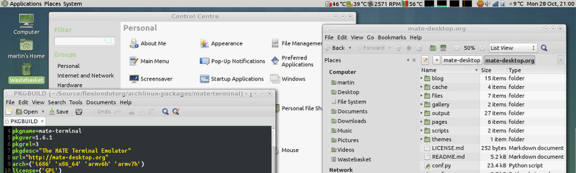

Entorn d’escriptori MATE
L'entorn d'escriptori MATE és la continuació de GNOME 2. Proporciona un entorn d'escriptori intuïtiu i atractiu minjançant metàfores tradicionals per a Linux i altres sistemes operatius similars a Unix.
MATE està en desenvolupament actiu per afegir suport per a les noves tecnologies mentre es conserva una experiència d'escriptori tradicional. Consulteu el full de ruta.

Podeu trobar més captures de MATE.
Notícies
- 2020-02-10 09:00 Llançament de MATE 1.24
- 2019-03-18 09:00 Llançament de MATE 1.22
- 2018-02-07 09:00 MATE 1.20 released
- 2017-03-13 23:30 MATE 1.18 released
- 2016-12-22 01:00 Server Outage
Les publicacions del blog també estan indexades per etiquetes i data d'arxivament. També podeu donar un cop d'ull al Planeta de MATE per veure quina és la comunitat més àmplia de MATE que fa més publicacions.
Quines distribucions suporten MATE?
MATE està disponible a través de dipòsits oficials per a les distribucions de Linux següents:
- Alpine Linux
- Antergos
- AOSC
- Arch Linux
- Debian
- Fedora
- Gentoo
- GNU Guix i GNU GuixSD
- Linux Mint
- Mageia
- Manjaro
- openSUSE
- Parrot Security OS
- PCLinuxOS
- PLD Linux
- Sabayon
- Salix
- Slint
- Solus
- Trisquel GNU/Linux
- Ubuntu
- Ubuntu MATE
- Uruk GNU/Linux
- Vector Linux
- Void Linux
MATE està disponible a través de dipòsits no oficials per a les distribucions de Linux següents:
Potser preferiu UNIX?
Tambe podeu consultar a DistroWatch.com totes les distribucions que suporten MATE.
La comunitat de MATE ha documentat com instal·lar MATE en moltes distribucions a les directrius d'instal·lació.
Aplicacions
MATE està format per diverses aplicacions. El canvi de nom és necessari per evitar conflictes amb els components de GNOME.
Caja

Caja és el gestor de fitxers oficial de l'escriptori MATE. Permet navegar pels directoris, així com previsualitzar fitxers i llançar les aplicacions associades als fitxers. També s'encarrega de gestionar les icones a l'escriptori de MATE. Funciona en sistemes de fitxers locals i remots. Caja és una bifurcació de Nautilus.
Pluma

Pluma és un editor de text que admet la majoria de les funcions d'editor estàndard. També estén aquesta funcionalitat bàsica amb altres funcions que no solen trobar-se en editors de text simples. Pluma és una aplicació gràfica que admet l'edició de diversos fitxers de text en una finestra (coneguts de vegades com pestanyes o MDI). Pluma és compatible totalment amb texts internacionals mitjançant l'ús de la codificació UTF-8 d'Unicode als fitxers editats. El seu conjunt de funcionalitats principals inclou el ressaltat de la sintaxi de codi font, la indentació automàtica i el suport d'impressió (amb vista prèvia d'impressió). Pluma és una bifurcació de Gedit.
Eye of MATE

Eye of MATE, o eom, és un visualitzador de gràfics simple per a l'escriptori MATE que utilitza la biblioteca gdk-pixbuf. Pot fer front a imatges grans, i pot fer zoom i desplaçaments amb un ús constant de memòria. Els seus objectius són la senzillesa i el compliment dels estàndards. Eye of MATE és una bifurcació d'Eye of GNOME.
Atril

Atril és un visualitzador de documents simple de diverses pàgines. Pot mostrar i imprimir fitxers PS (PostScript), EPS (Encapsulated PostScript), DJVU, DVI, XPS i PDF (Portable Document Format). Quan el document ho admet, també permet cercar text, copiar text al portapapers, navegar per hipertext i marcadors de taules de continguts. Atril és una bifurcació d'Evince.
Engrampa

Engrampa és un gestor d'arxius per a l'entorn MATE. Permet crear i modificar arxius, veure el contingut d'un arxiu, veure un fitxer contingut en un arxiu i extreure fitxers de l'arxiu. Engrampa és una bifurcació de File Roller.
Terminal de MATE

El terminal de MATE és una aplicació d'emulació de terminal que podeu utilitzar per accedir a un shell d'UNIX a l'entorn MATE. Amb ell, podeu executar qualsevol aplicació que estigui dissenyada per executar-se en terminals VT102, VT220 i xterm. El terminal de MATE també té la capacitat d'ús de diversos terminals en una única finestra (pestanyes) i admet la gestió de diferents configuracions (perfils). El terminal de MATE és una bifurcació del terminal de GNOME.
D'on ve el nom?
El nom "MATE", que es pronuncia Ma-Tay, ve de yerba maté, és un arbre o arbust de la família de les aquifoliàcies, originari de Sud-amèrica. Les seves fulles contenen cafeïna i s'utilitzen per fer infusions i una beguda anomenada mate.